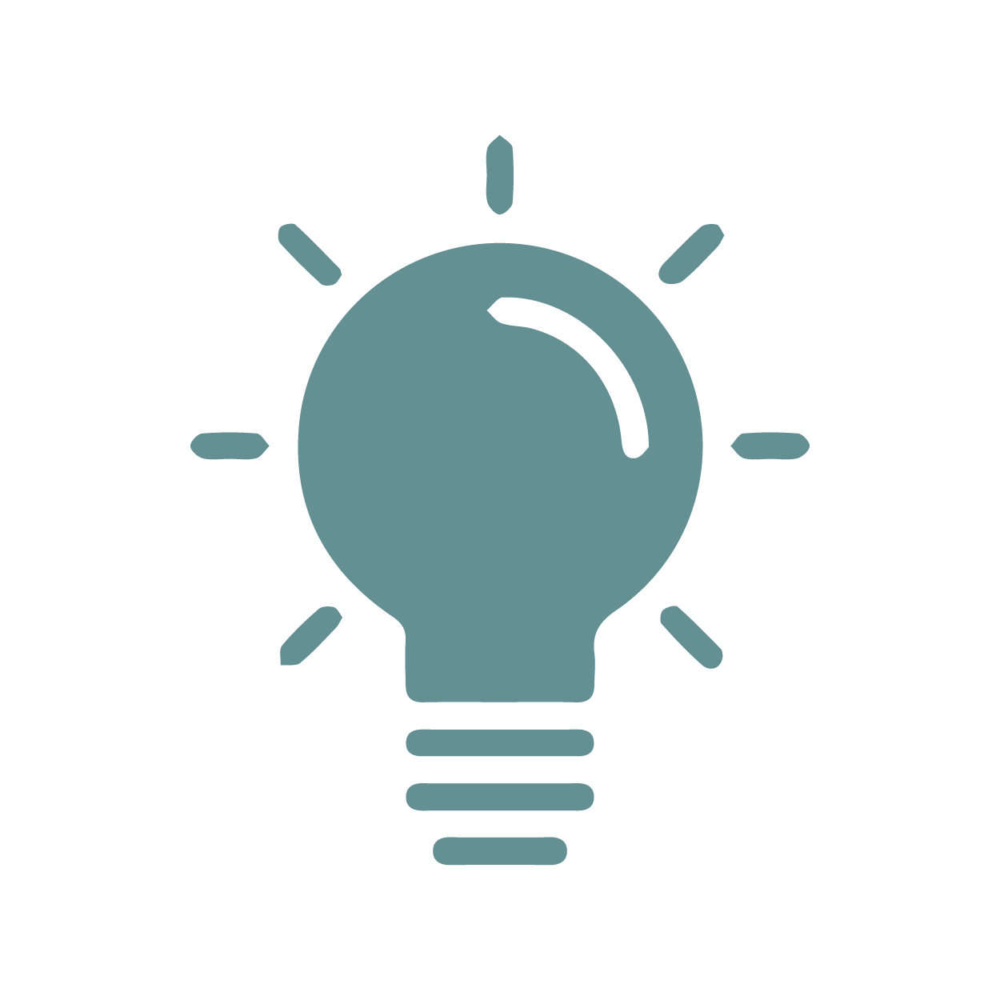

Resume
With 3 years of experience in university activities, 3 years of part-time and freelance projects and more than 1 year of full-time work experience, I am constantly learning and developing creative skills through new projects.
Working experience
Sales Marketing Executive
12/2020 - Present
Nesslash Company, HCM
- Contributes information, ideas, and research to help develop marketing strategies
- Helping to detail, design, and implement marketing plans for each product being offered
- Developing sales strategies and approaches for various products to customers
- Maintains excellent relationships with clients through superior customer service
- Being charged of all of the design of the company’s communications publications
Social Media Executive
06/2020 - 11/2020
VBA-ADK Agency, HCM
- Improving Facebook fanpage management skill
- Tracking, statisticing, comparing and measuring the effectiveness of social media marketing activities through specific KPIs
- Coordinating handling communication crisis
- Contacting to KOL/Influencers and do the Influencer marketing plan for customers
- Managing, supporting and navigating online events (contests, games ...) for customers
Social Media Collaborator
05/2019 – 05/2020
VNG Corporation, HCM
- Improving Facebook fanpage management skill
- Creating contents in Facebook fanpage
- Designing images to upload in Facebook fanpage
- Tracking, and measuring the effectiveness of fanpage activities through weekly and monthly report.
- Managing, supporting and navigating online events (contests, games ...) for customers
EXTRACURRICULAR
Head of Creative & Communication Department
10/2017 – 06/2020
Studies Sciences International Relations Department of Youth UEH
- Organizing school-level academic programs
- Creating concept and designing publications of these programs
- Improving Facebook fanpage management skill
- Tracking, confirming and feedbacking to other members
FREELANCE EXPERIENCES

Designer at Đất Đỏ Cafe
10/2020 – 12/2020
Designing poster, flyers and backdrop for brand awareness
Designer at IchiGo Japanese Center
06/2020 – 01/2021
Developing concepts, graphics for social media posts and company printed publications
Content Writer at Adayroi
09/2018 – 03/2019
Writing 800-1200 words articles at Blog Adayroi.com